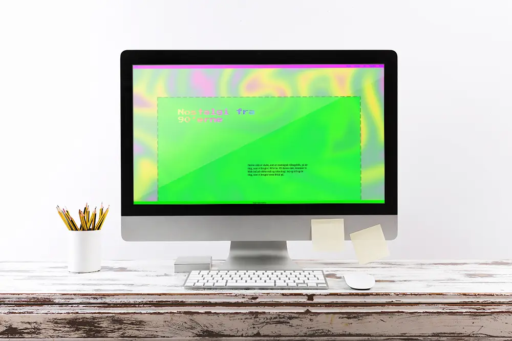

Opgaven Responsive site V2, gik ud på at vi skulle kode en hjemmeside med HTML og CSS, ud fra den stilart, vi fik udleveret. Jeg fik tildelt stilen 90'ernes retro design og valgte
at designe min hjemmeside med stærke farver, pixelerede fonte og blå links, da vores research viste, at det var meget brugt til denne stilart.
Desuden havde jeg aldrig arbejdet med
HTML eller CSS før, så opgaverne, som vi havde lavet gennem temaet, hjalp mig, til at komme frem til mit endelige produkt.
På billederne nedenfor, kan man se nogen af de forskellige designs udarbejdede i Adobe XD, ud fra, hvad vi havde lært, at denne stilart gjorde brug af. De midterste billeder, er dem jeg valgte at gå med.
Se min endelige opgave her:
